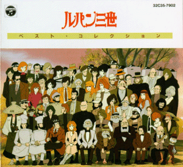

Lupin 3rd

Useful Links
Anime Pocket Guide entry
Anime Web Turnpike: Lupin 3rd Links
Lupin III FAQ
Monkey Punch's Knockout Lounge
Gameboy Games
SD Lupin III Kinko Yaburi Daisakusen
MSX Games
Lupin III: The Castle of Cagliostro
Lupin III: The Legend of the Gold of Babylon
Nintendo Games
Lupin III
On-line Games
Good Marksman?
SNES Games
Lupin III
Anime Video Game Resource Center © 1998 by
Luis A. Cruz